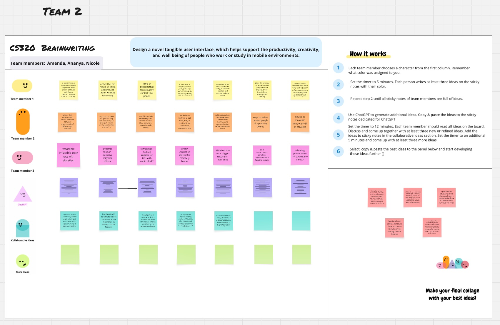
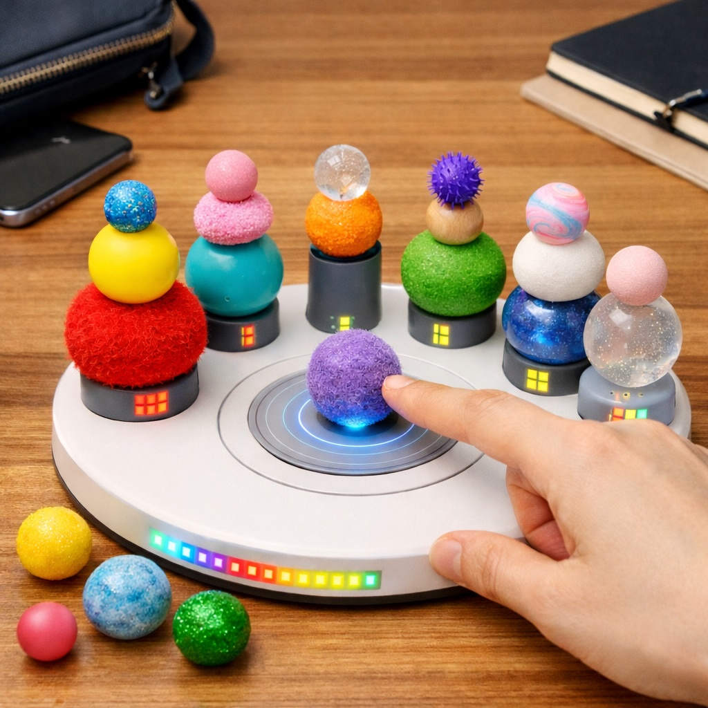
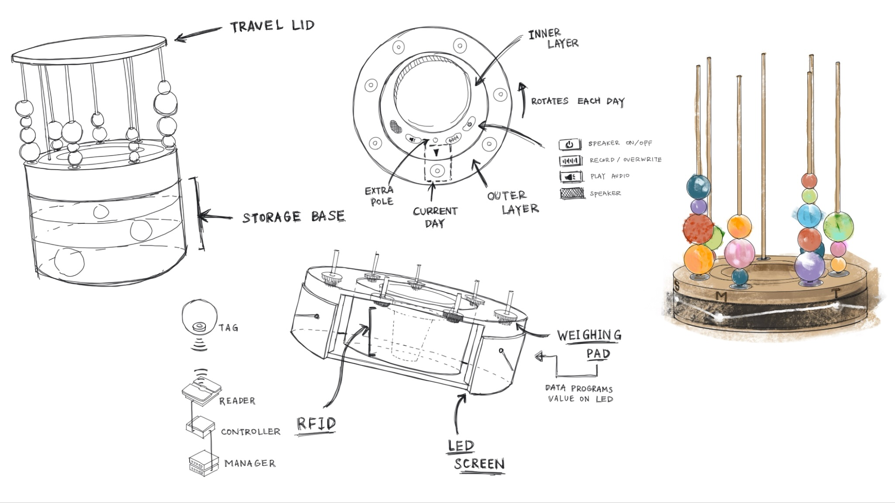
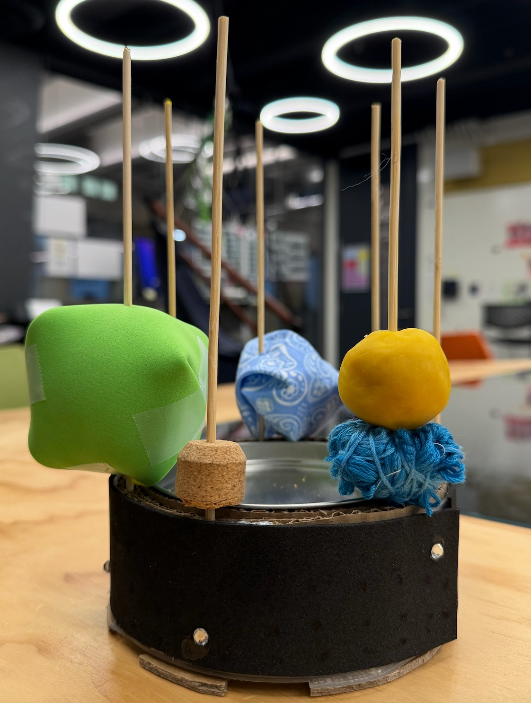
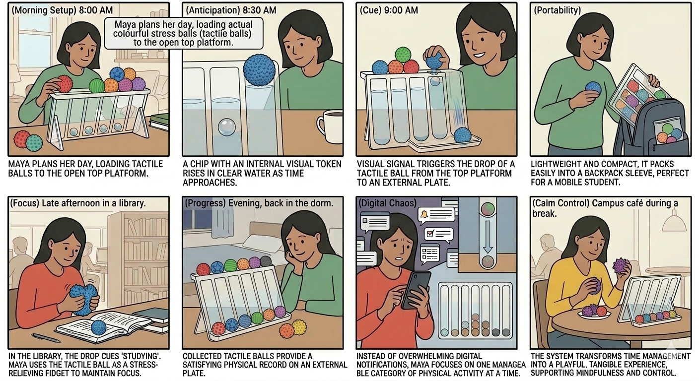
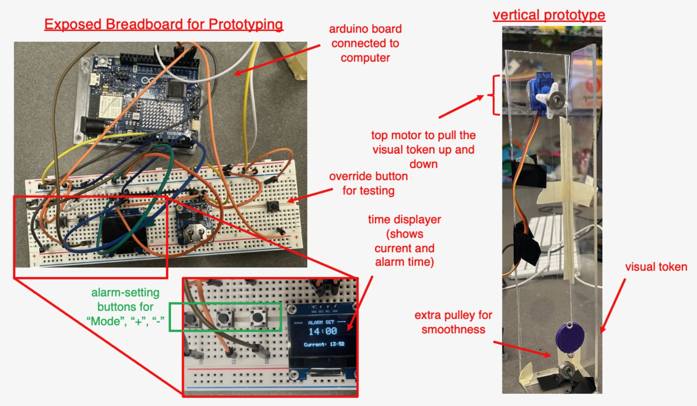
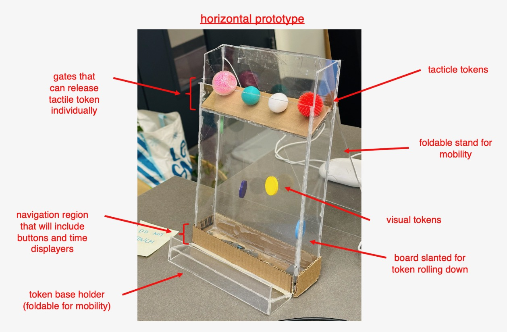

Team
-
Amanda Cheng
Circuit-connector and supplies manager, once broke a piece of plexiglass with her bare hands in a moment of need.
-
Nicole Lei
Organizational and product gluer, obsessed with work plans, usually found with superglue on her fingers.
-
Ananya Ganesh
Coder and multi-tasker, leaves a trail of deflated stress balls and Twix wrappers everywhere she goes.
Problem Statement
Modern productivity relies almost exclusively on digital planning tools. For example, Google Calendar presents time through screen-based, notification-driven interfaces that are easily ignored or overlooked, especially in high-distraction mobile environments. These systems rely on brief, disruptive alerts that tend to interrupt users during periods of deep focus, resulting in missed or delayed task transitions.
Additionally, the very abstract, two-dimensional blocks displayed on Google Calendar are visually overwhelming, often displaying all tasks of the week that create stress and reduce users’ ability to focus on immediate priorities, and at the same time lacking any tactile and sensory engagement.
We hope our users will be able to have time to break away from digital screens with more obvious physical elements to remind users the transition to the next task and with tactile tokens to engage with. Through these visual elements and tokens, planning becomes fun and tangible rather than stressful and abstract.
Conceptual Design
Planaball is a calendar-like desk tool that consists of a visual and a tactile component which collectively represent a concept of the user’s choosing, such as a particular task or a time block.
The visual chip gradually rises as the set alarm time arrives to serve as a slow reminder to the user that it will be time to switch contexts soon.
The tactile ball is released at the set alarm time to ease the transition by having the user play with it as a stress relief mechanism or absorber for fidgeting.


What makes it novel
- A cohesive 3D and tactile way to represent plans
- Creates an engaging break from screens
- Integrates a playful experience into a productive activity
Design Process & Artifacts
-
Brainstorming
Discussing everything from thermochromic paint to spring-release pants.

-
Visualisations
Settling on Tholos (deprecated :)) as a productivity tool.


-
Initial Prototype
Made of cookie tins, cardboard, and Play-Doh.

-
Pivot: New Ideas
Focusing on compactness and an easy flow of interaction with more cohesive tangible representations (shout-out to Claire!).


-
Vertical and Horizontal Prototypes
The first somewhat working iterations!

Vertical Prototype 
Horizontal Prototype -
Mechanism Changes
Our design went through multiple iterations. We began with a water-oil system, then switched to a servo-driven pulley using fishing line. After that, we experimented with a servo and push-stick mechanism to lift and hide the blocks, before finally settling on a solenoid-based release system to drop the ball.
-
Final Prototype
Meet Planaball!

Prototype Demo
Is this video not displaying correctly? Watch it here instead!
- Physical: Squeeze and play with fun tactile balls of different textures!
- Feedback: Visual chip moving up and down + Tactile ball falling
- Features: Independent, parallel systems for four time blocks
GitHub Repository
Code, BOM, and firmware notes live here:
github.com/na-nan-ya/cs320-team2-planaball